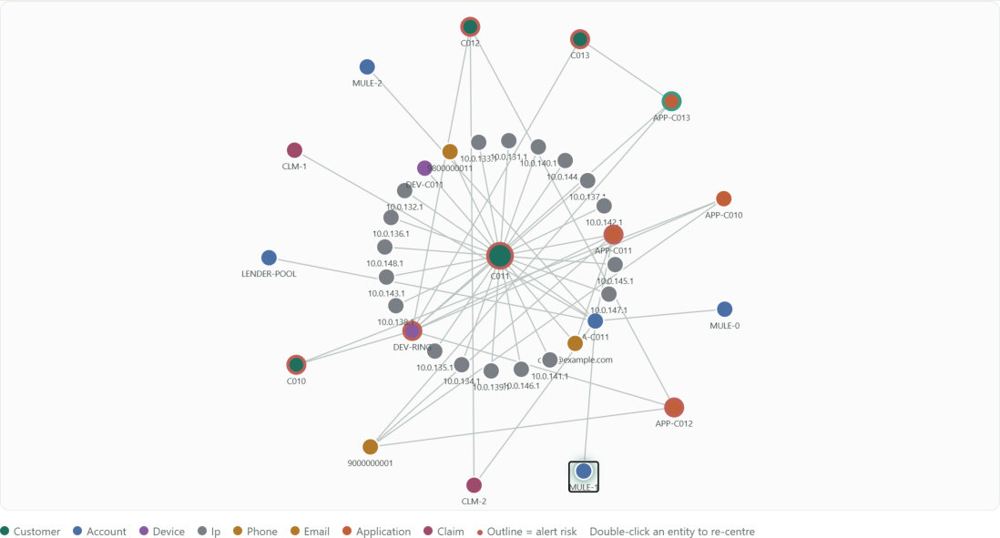
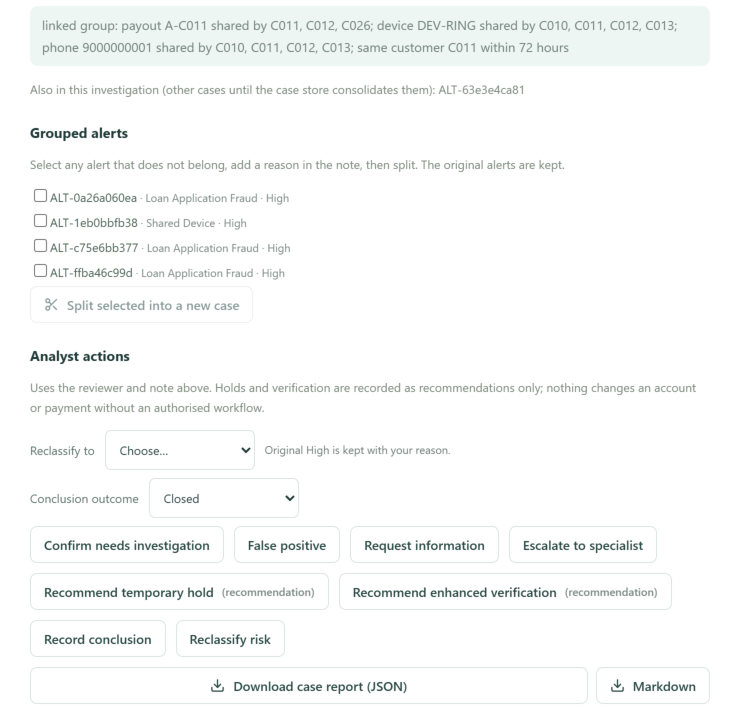

AZENTIO HACKATHON · DIGITAL FRAUD INVESTIGATION SYSTEM
FinShield
Fraud investigation you can defend: deterministic rules decide, a learned model advises, three AI agents explain and suggest, and the analyst owns every decision.
93%of 56 planted fraud incidents caught at Medium or High on held-out data
Level 1 · detect, score, explain, case queue | Level 2 · correlate, network, consolidate, investigate, audit | All data is synthetic
EXECUTIVE SUMMARY
A system an auditor can read, not a model they have to trust
Rules decide
23 active risk indicators and 6 mitigations, weighted in one versioned file, produce every score and band. Same data and same rules always give the same alerts.
ML advises
A sign-constrained model learned from labelled scenarios re-weighs the rule evidence. It is shown beside the score and never sets a band or a case.
Agents explain
Pattern Scout, Ask FinShield and Reviewer memory suggest and explain. Every ID they cite is checked against the data. They work with the LLM off.
Humans decide
Eight analyst actions, each with a reviewer and a reason. Holds are recommendations. Alerts are immutable; every correction is appended.
What it covers
Level 1. Ingest CSV/Excel/JSON with validation; detect 13 fraud scenarios, including the four required; score 0–100 with named contributions; dashboard, filters, case queue.
FinShield · Digital Fraud Investigation System · Submission brief3
TRUST MODEL
Explainable first
Who may decide what
The central design rule: every component has a clearly bounded power. Anything probabilistic or generative sits on the advisory side of the line.
Capability
Rules engine
ML shadow
AI agents
Analyst
Set the risk score and band
Decides
Shown beside it
No
Reclassify only; original band kept
Open a case from an alert
Decides (Medium/High)
No
No
No
Group alerts into one investigation
Proposes, with the reason
No
No
Can split; split is pinned
Change case status, record a decision
No
No
No
Decides, with reviewer + note
Touch an account or payment
No
No
No
Recommends only; nothing executed
Write to the audit trail
System events
No
AI assessment, only when saved by the analyst, labelled
Decisions, actions, corrections
Propose a new rule
No
No
Pattern Scout suggests
Approve / dismiss recorded; rules unchanged
Proof, not promise. A test runs the full golden set with and without the ML model installed and asserts that rule scores, bands and categories are identical. The golden scorecard (34/34) is byte-identical after the ML step.
FinShield · Digital Fraud Investigation System · Submission brief5
ONE CASE, END TO END
Level 2
From four loose records to one defensible investigation
1
Records
3 loan applications on device DEV-RING with one phone; payout to A-C011; outflows to MULE-0/1/2; claims CLM-1, CLM-2 paid into A-C011.
›
2
Indicators
Shared-device applications, phone reuse, loan-to-mule cash-out. Four alerts, each with named contributions and record IDs.
›
3
Linked group
Customers joined only by device, phone, email or payout account. Reason stored: device DEV-RING and phone 9000000001 shared by C010–C013.
›
4
One case
CASE-7085d89848, High, priority 87, evidence strong. Why grouped is shown; any alert can be split out.
›
5
Decision + record
Reviewer + note for each action. Hold is a recommendation. AI assessments are labelled and rejectable. Report downloads as JSON or Markdown.

Network around C011: every edge is a shared identifier, and hovering shows the record IDs that prove it.

Case workspace: why these alerts are grouped, split, eight analyst actions with a reviewer and note, report download.
Source: live demo dataset, case CASE-7085d89848; backend/app/graph, backend/app/api/cases.py
FinShield · Digital Fraud Investigation System · Submission brief6
LEARNED WEIGHTS
Trained models
Trained models calibrate the weights; they do not replace the rules
What was trained, and on what
Features. Per scoring unit: each rule's evidence (weight × strength) plus whether an attack-chain floor applied. Primary parameters are the risk indicators; derived parameters are the mitigations and the chain floor.
Labels. Planted incidents in a seeded synthetic generator, with labelled lookalikes.
Model A (selected). Logistic regression with sign bounds (risk ≥ 0, mitigation ≤ 0) and a pull toward the hand weights. Output: a multiplier per rule.
Model B (rejected). Gradient-boosted trees with monotonic constraints, explained by permutation importance. Higher recall but lookalike false positives rose to 25% at Medium+ (8% at High).
Protocol. Train on pooled seeds 2, 6, 7 (3,097 units, 512 fraud); test on unseen seeds 4, 5, 8 at matched alert volume; 50 bootstrap resamples by incident for 90% intervals.
Unseen datasets, mean of 3
Hand
Learned
Ranking quality (average precision)
0.78
0.95
Precision of Medium+ alerts
76%
88%
Background false alarms
35
17
Lookalikes wrongly at Medium+
10%
8%
Fraud caught at Medium+ (unchanged)
89%
89%
What the model says about our hand weights
Dot = learned multiplier on the hand weight; whisker = 90% bootstrap interval. Known-payee, tenure, new-payee and amount rules deserve more weight; network convergence (NW-01) deserves much less. The rare rules stay near 1.0: not enough evidence to move them.
Shadow first, promote on evidence. The learned score runs on every alert and is labelled comparison-only. It earns promotion to the official score only after analyst feedback confirms it on real data.
Source: evals/reports/ml_stability.md, learned_weights.md; backend/app/detect/ml.py, ml_model.json (rules version d88c05508daf). Unit-level metrics on synthetic data.
FinShield · Digital Fraud Investigation System · Submission brief7
THREE AGENTS
Agents
AI that assists the system and the analyst, and never decides
Assists the system
Pattern Scout
Finds linked behaviour that no rule alerted on: customers sharing a device, phone or payout account with no Medium/High alert; several customers starting to pay the same new account.
Deterministic mining finds candidates and their record IDs.
The LLM only words a hypothesis (with an innocent explanation) and a suggested rule.
Approve / dismiss needs a note; approving never changes a rule or score. Decisions survive re-scans.
Assists the analyst and evaluator
Ask FinShield
Answers questions about what is on screen: why a case is High, what links these customers, what to verify first.
The browser sends only the route and IDs; the backend loads the data from the store.
Every cited ID must exist in that data, otherwise it is dropped and shown as dropped.
Record text is data, never instructions. Context is bounded in size.
An answer can be saved to the case as a labelled AI assessment, and rejected later.
Assists continuity
Reviewer memory
Brings earlier reviewers' decisions, actions and notes on this case, and on cases sharing its customer or account, into the investigation.
Reads the append-only case history; nothing is rewritten.
Shown as "What earlier reviewers found" and passed to Ask FinShield as context.
System events are excluded; only human and AI-labelled entries count.
1 · ScreenBrowser sends the route and IDs only
›
2 · LoadBackend reads the data from the store
›
3 · LLMWords an answer or hypothesis; no tools, no writes
›
4 · CheckEvery cited ID must exist; others are dropped
›
5 · LabelMarked AI-generated; saved only by the analyst
›
6 · ReviewAnalyst accepts, rejects or ignores; rules and scores untouched
Shared guardrailsNever decideReal IDs onlyData, not ordersLabelled and rejectableWorks with AI off
Model: openai/gpt-oss-120b on Groq (GROQ_MODEL). The ML shadow score is a classifier, not an agent.
FinShield · Digital Fraud Investigation System · Submission brief8
SCALABILITY
Design patterns
Built and measured today, and the production path we would take
Built and measured
6× faster detection with identical output: 123 s → 19 s on 17k transactions and 11k logins, by removing quadratic hot spots (binary-search windows, sorted per-customer history).
Idempotent runs. Run ID is derived from data and rules; re-running the same inputs reuses the stored run with no new rows.
Stable incident keys. A case follows the same incident across runs; pinned splits are never undone.
Rules as versioned config. One file, hashed to a version; a change creates a new version and old alerts stay as history.
Separable stages. Signal collection and scoring are separate functions, so variants can be re-scored without recomputation.
State in the database. Pagination on lists; storage chosen by DATABASE_URL.
Bounded graph and AI cost. Hub nodes capped; assistant context capped; LLM calls time-limited with a deterministic fallback.
Production path (designed, not built)
Storage. Move from SQLite to Postgres through the same SQLAlchemy models; add indexes on entity and time.
Workers. Run detection as background jobs per tenant and per window instead of in the request.
Streaming. Incremental ingestion with windowed re-scoring for real-time alerts.
Identity. Login, roles and four-eyes approval before any account-affecting action is allowed.
Feedback loop. Analyst outcomes retrain the shadow model; approved Pattern Scout suggestions become tested rules through a rule editor.
Observability. Per-stage timings, alert-volume and drift dashboards.
Not yet tested: Postgres, multi-user concurrency, or volumes beyond the synthetic sets.
Source: git history (perf commit d666d6a), backend/app/api/alert_store.py, backend/app/config.py, backend/app/detect/config.py
FinShield · Digital Fraud Investigation System · Submission brief9
RISKS AND MITIGATIONS
Enterprise controls
Failure modes we designed for, and where to check each one
Risk
Mitigation
Where
LLM invents an entity or ID
Citations checked against the loaded data; unverifiable IDs dropped and shown
ai/assistant.py
Instructions hidden in record text
Record text passed as data; model has no tools and no write path
ai/assistant.py
LLM is down or slow
Time-limited calls; templates and quoted evidence take over
graph/scout.py
Model overreach
ML shadow only; test asserts identical rule output with and without it
tests/test_ml_shadow.py
Double counting one fact
Indicator families: only the strongest counts
score/scoring.py
False links from popular IDs
Hub cap; only device, phone, email, payout account group customers
graph/builder.py
Rule drift hides history
Rules hashed to a version; old alerts stay as snapshots
detect/config.py
Wrongful account action
Hold and verification are recorded recommendations, not executed
api/cases.py
Re-run undoes an analyst split
Split incidents are pinned across runs
api/cases.py
Mixed currencies summed
Exposure kept per currency, never added across
graph/priority.py
Weak evidence ranked first
Single-fact cases capped below top and labelled needs review
graph/priority.py
Tuning on the data we report
Reported on seeds never used for tuning
evals/
Source: backend/app (paths shown), evals/reports
FinShield · Digital Fraud Investigation System · Submission brief10
EVALUATION
Evaluation
Measured on held-out synthetic data we did not tune on
93%of 56 fraud incidents caught at Medium+
57%caught at High
0%of 48 lookalikes at High (8% at Medium)
100%recall on 16 brand-new customers
Read these numbers honestly
Synthetic data with planted, labelled scenarios. It measures the rules against what we can simulate, not real-world fraud rates.
Open gap: slow drain (small amounts over a long time) stays below Medium: 0 of 4.
All 4 lookalike false positives are one scenario, loan_paid_to_supplier: 4 of 4 reach Medium, none reach High.
Precision of Medium/High alerts is 50% on this held-out set, counted per alert. The learned-weights table counts per scoring unit on three other seeds (76% to 88%), so the two are not directly comparable.
34 of 34 hand-built calibration scenarios behave as designed; 399 backend tests pass.
Source: evals/reports/d3_heldout.md (seed 3), golden_scorecard.md, ml_stability.md. Rules version d88c05508daf.
FinShield · Digital Fraud Investigation System · Submission brief11
LIMITS AND NEXT STEPS
Honest limits
What we did not claim, and what comes next
Limits today
Synthetic data only; metrics are on simulated scenarios, not production fraud rates.
Reviewer identity is a typed name; no login or role-based approval yet.
Slow-drain fraud is not caught at Medium.
Hold and verification are recommendations; no payment system is connected.
AI wording depends on the LLM service; when off, the app falls back to quoted evidence.
Learned weights are calibrated on synthetic scenarios and shown only as a shadow score.
Next steps
Analyst feedback (confirmed fraud / false positive) retrains the shadow model; promote it only on real-data evidence.
Login, roles and four-eyes approval for account-affecting actions.
Streaming ingestion and windowed re-scoring.
Approved Pattern Scout suggestions become tested rules through the rule editor.
Long-window indicators for slow-drain and collusion patterns.
FinShield · Digital Fraud Investigation System · Submission brief12
VERIFY IT YOURSELF
Reproducible
Run it, click it, check the numbers
Run
python -m venv .venv
.venv/Scripts/python -m pip install -r backend/requirements.txt
./run.ps1 # backend on :8000
cd frontend && npm run dev # UI on :5173
# UI: Data sources → Load demo dataset → Run detection
cd backend && ../.venv/Scripts/python -m pytest -q # 399 tests
Demo click path
Overview. Filter, open T-C002-ATO (High 85); include Low and open DEV-HOME (Low 18).